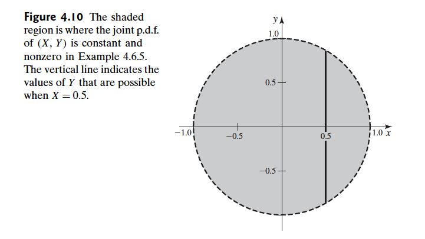

Abstract: 本文介绍协方差和相关性的基础知识，以及部分性质
Keywords: Covariance,Correlation,Properties of Covariance and Correlation
协方差和相关性
概率论基础知识，基础工具已经进入到后半部分了，接下来后面就是对特定分布的研究和分析了，使用的工具就是我们已经介绍过的这些知识，融汇贯通是所有知识学习的唯一考量，掌握的知识点如果不能融入体系，一个月后就相当于没学过，但是成体系的知识不同，只要有一个根节点，就能联系到整个一颗知识树。
一杯敬朝阳，一杯敬月光
我们前面几个重要的数字特征针对的基本都是单一随机变量，我们很清楚，我们在实际操作中面对的基本都是多随机变量的联合分布，那么我们接下来就想研究下，两个或者多个随机变量之间是怎么互相影响的。
协方差(Covariance)，相关性(Correlation)是度量随机变量间独立性的一种数字特征，但是必须注意，这两个数字特征度量的是随机变量之间的 线性相关程度 ，这里要好好注意一下！线性相关程度。
注意，协方差和相关性，只刻画线性相关程度！
协方差 Covariance
当我们将随机变量从一个扩展到多个，前面提到的期望，方差，中值等这些针对单个随机变量的数字特征就只能刻画联合分布的某一边缘分布的性质了。所以我们提出了新的数字特征，这个数字特征能描述两个随机变量之间有没有变化上的关系，比如他们经常同时变大或者变小，或者总是一个变大另一个变小，这种关联的关系。
通过这种数字特征，我们能够在求出若干个这种变量的方差，以及通过已经得到的几个随机变量的结果来预测其他几个。如果确定了这几个随机变量之间的关联，这些似乎都是可行的。
Definition Covariance. Let $X$ and $Y$ be random variables having finite means.Let $E(X)=\mu_X$ and $E(Y)=\mu_Y$ The covariance of X and Y,which is denoted by $Cov(X,Y)$ ,is defined as
$$
Cov(X,Y)=E[(X-\mu_X)(Y-\mu_Y)]
$$
if the expectation exists.
没错我们本章就是在研究期望，所以，本章所有的数字特征都来自期望，期望的存在性也左右了这些数字特征的存在性。
如果 X 和Y的都有有限的方差，那么期望存在，并且 $Cov(X,Y)$ 存在且有限，但是正负不受限制，可以是正数，负数，0
举个🌰 ：
已知随机变量 $X$ 和 $Y$ 有联合p.d.f.
$$
f(x,y)=
\begin{cases}
2xy+0.5&\text{ for } 0\leq x\leq 1 \text{ and } 0\leq y\leq 1\\
0&\text{otherwise}
\end{cases}
$$
我们来计算 $X$ 和 $Y$ 的协方差。
首先我们要做的是计算均值，求 $\mu_X,\mu_Y$
$$
\begin{aligned}
\mu_X&=\int^{1}_{0}\int^{1}_{0}[2x^2y+0.5x]dydx\\
&=\int^{1}_{0}[x^2+0.5x]dx\\
&=\frac{7}{12}
\end{aligned}
$$
同理可以求出 $\mu_Y=\frac{7}{12}$
接下来就是求协方差了:
$$
\int^{1}_{0}\int^{1}_{0}(x-\frac{7}{12})(y-\frac{7}{12})(2xy+0.5)dydx
$$
求积分就不写了，很简单，结果是 $Cov(X,Y)=\frac{1}{144}$
按照定义算肯定不是最优的，有一个公理好像是说你永远不能一下就找到最优方法。计算协方差也是一样的。
Theorem For all random variables X and Y such that $\sigma^2_{X}<\infty$ and $\sigma^2_{Y}<\infty$ ,
$$
Cov(X,Y)=E(XY)-E(X)E(Y)
$$
这个定理是说当两个随机变量都有方差的时候，他们的联合分布的协方差可以用他们的期望来求得，这是个定理，定理都是可以被证明（定义不行）
证明：
$$
\begin{aligned}
Cov(X,Y)&=E(XY-\mu_X Y-\mu_Y X + \mu_X\mu_Y)\\
&=E(XY)-\mu_X E(Y)-\mu_y E(X) + \mu_X\mu_Y)\\
\end{aligned}
$$
就得到了上面定理的结论，证明过程非常简单。
协方差的的主要用途就是来刻画两个或者多个变量的相关程度，比如两个随机变量同时都变大或者同时都变小，或者一个变大一个变小。
观察定义我们可以注意到，当协方差大于0的时候，一般情况下如果出现了 $ X > \mu_X$ 就基本上会出现 $Y > \mu_Y$ 。是否一定会出现 $Y > \mu_Y$ ？这个是不确定的，但是发生概率极大。
同样的情况适合于协方差是负数，或者$ X < \mu_X$ 的情况
当协方差是0，那么 $X$ 与 $Y$ 对应于其均值的大小变换比较随意，没有太大的一致性.
上面介绍的就是协方差的一些情况，接下来就是相关性的引入。
相关性 Correlation
今天讲解两个数字特征，协方差和相关性，这两个数字特征最终目的一样都是想描述多个变量之间一致性变化的特点，比如，当 $X$ 为较大值的时候 $Y$ 有很大的可能取较大值，注意，我们前面给出的协方差的大小就是这个可能性的一种描述，但是，这个描述也有问题，他不稳定，为啥不稳定，
比如说随机变量 $X$ 和随机变量 $Y$ 他们的协方差是 $Cov(X,Y)$ 根据协方差的计算法则，当我们把随机变量变成 $2X$ 和 $Y$ 的时候 $Cov(2X,Y)=2Cov(X,Y)$ ，但他们的一致性关系应该是不变的，只是对应的随机变量的可能值变化了不少，一致性并不改变，我们需要一种数字特征能描述这种一致性，不因为随机变量伸缩而改变。
Definition Correlation.Let X and Y be random variables with finite variances $\sigma^2_{X}$ and $\sigma^2_{Y}$ ,respectively. Then the correlation of $X$ and $Y$ ,which is denoted by $\rho(X,Y)$ ,is defined as follow:
$$
\rho(X,Y)=\frac{Cov(X,Y)}{\sigma_X^2 \sigma_Y^2}
$$
回想一下，我们似乎见过这种比值形式的定义，没错，4-4中的偏度也是这种定义形式，其给出的解释去除分母上的特征对目标特征的影响，于是我们可以看出，当协方差去除分布离散程度以后，就是我们的相关度特征了。
接着我们有一个重要的不等式需要了解。
Theorem Schwarz Inequality.For all random variables $U$ and $V$ such that $E(UV)$ exists,
$$
[E(UV)]^2\leq E(U^2)E(V^2)
$$
If,in addition,the right-hand side of $[E(UV)]^2\leq E(U^2)E(V^2)$ is finite,then the two sides of it equal the same value if and only if there are nonzero constants $a$ and $b$ such that $aU+bV=0$ with probability 1.
首先给出了两个随机变量的期望的相关不等式，我们会在接下来完成证明，但是补充条款更有意思，说的是，小于等于号右边如果是有限的，那么等号成立当且仅当存在非零常数 $a$ 和 $b$ 使得 $aU+bV=0$ 横成立（或者叫做概率为1）
那么我们来证明这个定理。
证明：
- 如果 $E(U^2)=0$ 那么 $Pr(U=0)=1$ 所以必然有 $Pr(UV=0)=1$ 那么 $E(UV)=0$ 于是不等式成立。
- 同理可以证明 $E(V^2)=0$ 的情况。
- 当 $E(U^2)$ 或者 $E(V^2)$ 为无限的时候，不等式也成立。
- 接下来证明 $0 < E(U^2) < \infty$ , $0 < E(V^2) < \infty$ 的情况，对于所有的 $a$ 和 $b$ 那么：
不等式一：
$$
0\leq E[(aU + bV)^2]=a^2E(U^2)+b^2E(V^2)+2abE(UV)
$$
以及，不等式二：
$$
0\leq E[(aU - bV)^2]=a^2E(U^2)+b^2E(V^2)-2abE(UV)
$$
如果 令$a=[E(V^2)]^{1/2},b=[E(U^2)]^{1/2}$ 那么就有下面的关系：
不等式三：
$$
E(UV)\geq -[E(U^2)E(V^2)]^{1/2}
$$
根据不等式二，就有不等式四：
$$
E(UV)\leq [E(U^2)E(V^2)]^{1/2}
$$
上面两个不等式，不等式三和不等式四得出定理中的结论。
不等式中等号成立，当且仅当不等式三和不等式四等号成立，不等式三等号成立，当且仅当不等式一等于0成立，也就是当且仅当 $E[(aU+bV)^2]=0$ 成立，当且仅当 $aU+bV=0$ 恒成立。
同理可以得到 $aU-bV=0$ 恒成立，至此证毕！
Theorem Cauchy-Schwarz Inequality.Let $X$ and $Y$ be random variables with finite variance.Then
$$
[Cov(X,Y)]^2\leq \sigma^2_X\sigma^2_Y
$$
and
$$
-1\leq \rho(X,Y)\leq 1
$$
Furthermor,the inequality in $[Cov(X,Y)]^2\leq \sigma^2_X\sigma^2_Y$ is an equality if and only if there are nonzero constants $a$ and $b$ and a constant $c$ such that $aX+bY=c$ with probability 1.
Cauchy-Schwarz不等式，柯西是谁不介绍了，Schwarz翻译成中文叫施瓦茨。
这个不等式给出了相关性的关键信息，也就是相关性在 $[-1,1]$ 范围内，接下来我们看看如何证明他们：
证明
- 令$U=X-\mu_X$ 和 $V=Y-\mu_Y$
- 根据协方差定理 $Cov(X,Y)=E(XY)-E(X)E(Y)$ 可以直接得到 $[Cov(X,Y)]^2\leq \sigma^2_X\sigma^2_Y$
- 然后就可以得到 $-1\leq \rho(X,Y)\leq 1$ 这个结论
这个证明非常简单，只用到了前面协方差的一个计算定理，所以，可见相关性在 $[-1,1]$ 之间波动。
Definition Positively/Negatively Correlation/Uncorrelated.It is said that $X$ and $Y$ are positively correlated if $\rho (X,Y)>0$ ,that $X$ and $Y$ are negatively correlated if $\rho(X,Y) < 0$ ,and that $X$ and $Y$ are uncorrelated if $\rho(X,Y)=0$
定义正相关，负相关，还是不相关。
接下来我们就要研究协方差，和相关性的性质了。
相关性和协方差的的性质 Properties of Covariance and Correlation
性质1：独立的随机变量的相关性
If $X$ and $Y$ are independent random varibales with $0<\sigma^2_X<\infty$ and $0<\sigma^2_Y<\infty$ ,then
$$
Cov(X,Y)=\rho(X,Y)=0
$$
证明，如果随机变量 $X$ 和 $Y$ 独立，那么 $E(XY)=E(X)E(Y)$ ，根据定理 $Cov(X,Y)=E(XY)-E(X)E(Y)$ 有 $Cov(X,Y)=0$ 那么就有 $\rho(X,Y)=0$
证毕。
注意注意注意，两个变量独立可以推导出其相关性是0，但是相关性是0并不能推到出随机变量独立。
这里举个例子
随机变量 $X,Y$ 的联合分布是在一个圆范围内的均匀分布，可以得到其p.d.f. 是
$$
f(x)=
\begin{cases}
\frac{1}{2\pi}&\text{for } x^2+y^2 \leq 1\\
0&\text{otherwise }
\end{cases}
$$
因为随机变量变化范围是个圆而不是矩形，所以很明显 X和Y不独立（参考随机变量的独立性），但是可以计算其协方差为 $Cov(X,Y)=E[XY]-E[X]E[Y]=0-0=0$ 那么其相关性也是 0 ，于是相关的两个随机变量，其协方差，相关性也可以是0.

性质2：如果两个随机变量是线性关系，那么相关性为1
Theorem Suppose that $X$ is a random variable such that $0<\sigma^2_X<\infty$ ,and $Y=aX+b$ for some constants $a$ and $b$ ,where $a\neq 0$ ,If $a > 0$ the $\rho(X < Y)=1$ If $a < 0$ ,then $\rho(X,Y)=-1$
证明：
- 如果 $y=ax+b$
- 那么 $\mu_Y=a\mu_X+b$ ,$Y-\mu_Y=a(X-\mu_X)$
- 根据协方差定义有 $Cov(X,Y)=aE[(X-\mu_X)^2]=a\sigma^2_X$
- 因为有 $\sigma_Y=|a|\sigma_X$ 所以定理结论得到证明 （这步可由柯西-施瓦茨不等式得出）
- 证毕
这个定理告诉我们，相关性就是衡量两个随机变量的线性相关程度的。越接近线性，相关性的绝对值越接近1，反之越接近0，
注意相关性只用来衡量线性相关。相关性越接近零并不代表随机变量不相关，而是只代表他们不线性相关。
性质三：两个随机变量相加，其协方差和单个变量方差的关系
Theorem If $X$ and $Y$ are random variables such that $Var(X)<\infty$ and $Var(Y)<\infty$ ,then
$$
Var(X+Y)=Var(X)+Var(Y)-2Cov(X,Y)
$$
证明：
因为 $E[X+Y]=\mu_X+\mu_Y$ ,所以
$$
\begin{aligned}
Var(X+Y)&=E[(X+Y-\mu_X-\mu_Y)^2]\\
&=E[(X-\mu_X)^2+(Y-\mu_Y)^2+2(X-\mu_X)(Y-\mu_Y)]\\
&=Var(X)+Var(Y)+2Cov(X,Y)
\end{aligned}
$$
简单的计算，就不啰嗦了。
接着是一个推论，在上面定理成立的情况下，我们有：
Corollary Let a,b and c be constants.Under the conditions of theorem upside
$$
Var(aX+bY+c)=a^2Var(X)+b^2Var(Y)+2abCov(X,Y)
$$
还有一种特殊的情况就是
$$
Var(X-Y)=Var(X)+Var(Y)-2Cov(X,Y)
$$
性质四：根据性质三推广到多个随机变量的情况：
Theorem If $X_1,\dots,X_n$ are random variables scuh that $Var(X_i)<\infty$ for $i=0,\dots,n$ then
$$
Var(\sum^{n}_{i=1}X_i)=\sum^{n}_{i=1}Var(X_i)+2{\sum\sum}_{i<j}Cov(X_i,X_j)
$$
这个定理的证明相对要麻烦点，
证明：
- 首先
$$
Var(\sum^{n}_{i=1}X_i)=Cov(\sum^{n}_{i=1}X_i,\sum^{n}_{j=1}X_j)=\sum^{n}_{i=1}\sum^{n}_{j=1}Cov(X_i,X_j)
$$- 把上面的求和分成两部分一部分是 $i=j$ 一部分是 $i\neq j$ ，因为 $Var(x_i,x_j)=Var(x_j,x_i)$
$$
\begin{aligned}
Var(\sum^{n}_{i=1}X_i)&=\sum^{n}_{i=1}Var（X_i）+{\sum\sum}_{i\neq j}Cov(X_i,X_j)\\
&=\sum^{n}_{i=1}Var(X_i)+2{\sum\sum}_{i<j}Cov(X_i,X_j)
\end{aligned}
$$
证明过程大致如上所述，很简单的计算过程，如有疑问可以去参考下原文
上述定理得出一个推论
Corollary If $X_1,\dots,X_n$ are uncorrelated random varibales,then
$$
Var(\sum^{n}_{i=1}X_i)=\sum^{n}_{i=1}Var(X_i)
$$
总结
今天一下介绍了两个多随机变量的数字特征，所描述的性质类似，但是又各有各的用法，这部分内容在机器学习中非常常见，大家要好好研究，多做练习。
待续。。。